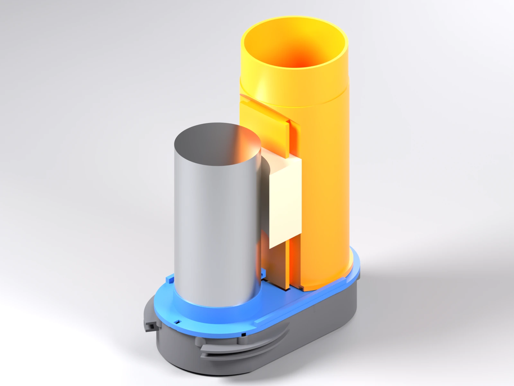
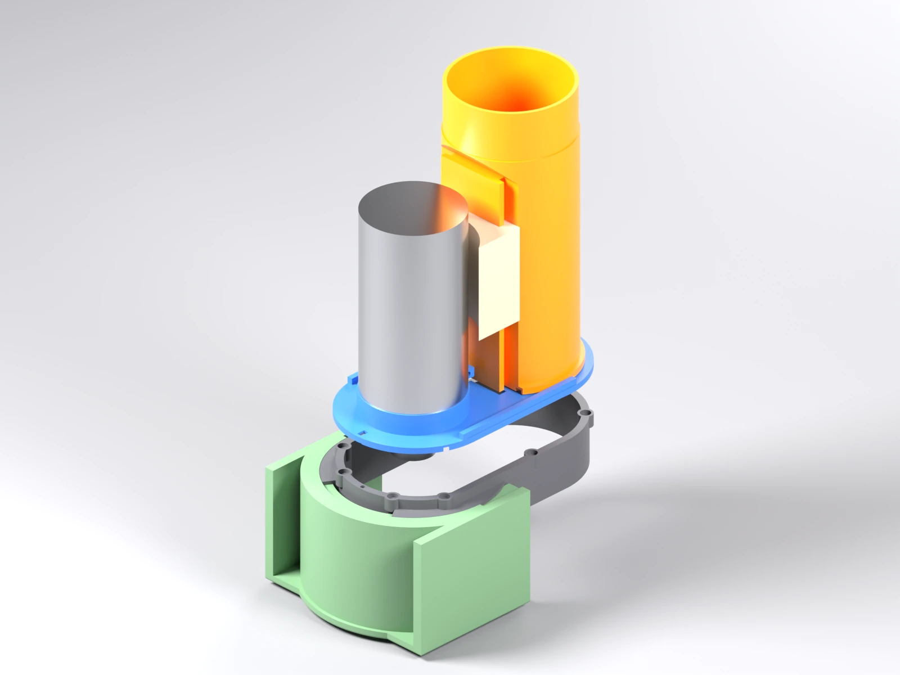
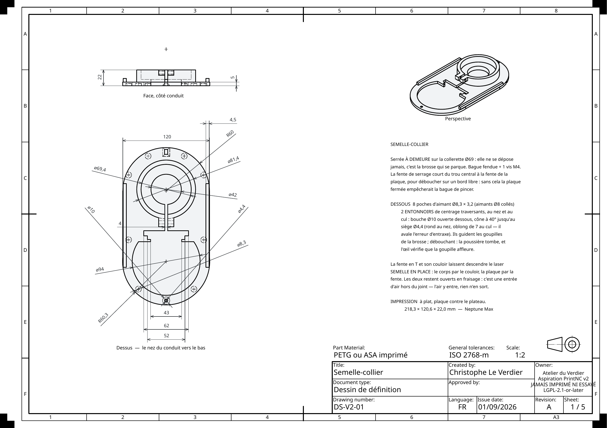
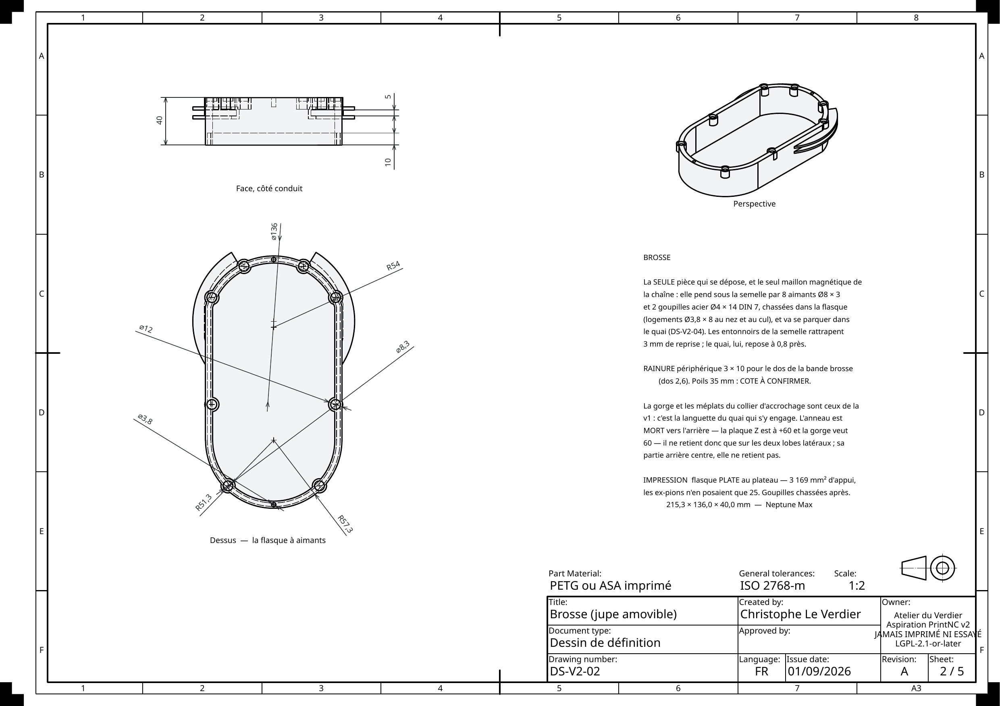
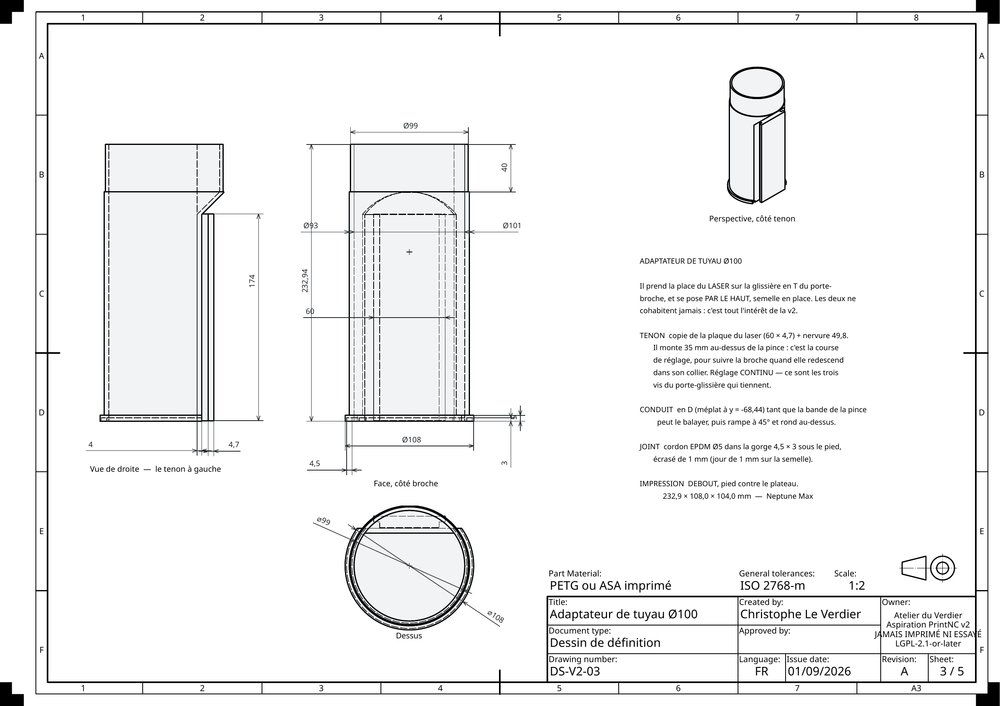
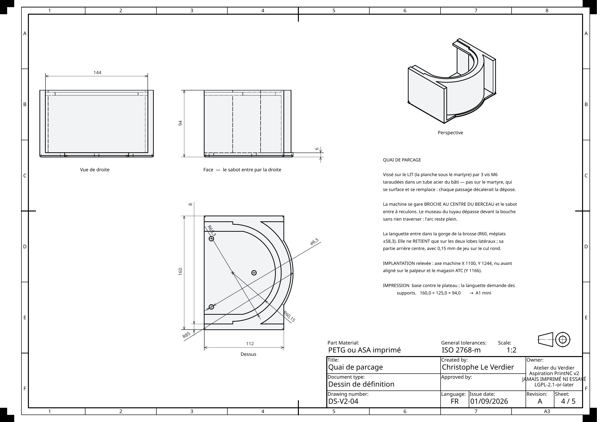
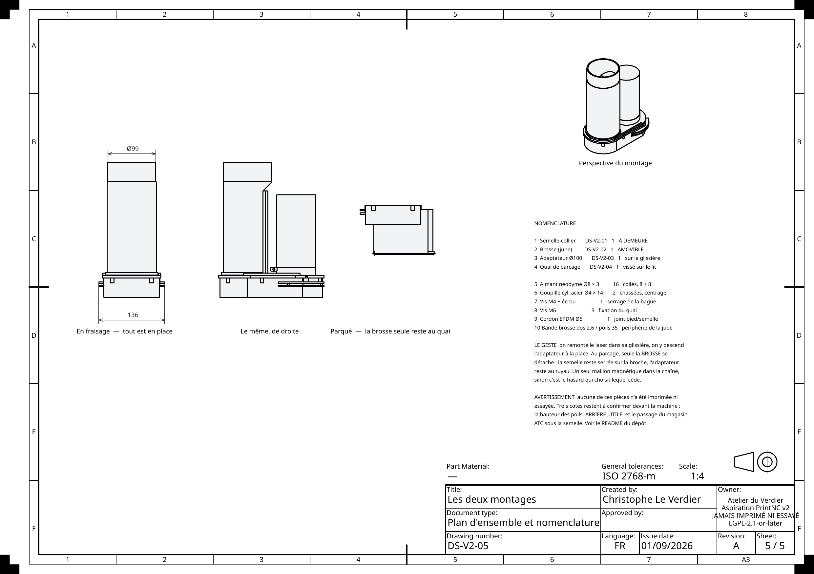

Cliquer n'importe où, ou Échap, pour fermer
Une jupe d'aspiration pour une broche Ø80, sur une machine où la place manque. Le principe tient en une phrase : l'adaptateur de tuyau prend la place du laser sur sa glissière. Les deux ne sont jamais montés ensemble, donc ils n'ont plus rien à se disputer.
Il n'y a que deux configurations à tenir : la machine fraise, ou la brosse est parquée pour laisser passer autre chose. Rien entre les deux.


Deux prises du même parcage, quatorze secondes chacune, sans son. La machine descend le sabot dans le quai ; la broche remonte et la brosse reste dans la fourche ; l'adaptateur s'en va par le haut avec le tuyau ; et le laser redescend prendre sa place dans la glissière — c'est là qu'on voit que les deux ne se disputent rien.
Le film est monté depuis le même modèle que les planches — les pièces y bougent aux positions que le modèle calcule, pas à celles qu'on aimerait. Mais une animation ne rencontre pas plus la machine qu'un dessin : elle montre une intention, elle ne la valide pas.
La seule zone cylindrique libre sous le porte-broche est la collerette Ø69,0. Tout part de là.
Une bague fendue serrée par une vis M4 sur la collerette, prolongée en plaque de 5 mm. Elle ne se dépose jamais. Une fente en T et son couloir la traversent, pour que le laser puisse descendre semelle en place : le corps par le couloir, la plaque par la fente.
La jupe à poils, parois de 6 mm, avec une rainure périphérique de 10 mm qui reçoit le dos de la bande brosse du commerce. Elle pend sous la semelle par huit aimants et deux goupilles acier chassées dans la flasque, guidées par des entonnoirs creusés sous la semelle (bouche Ø10, siège Ø4,4) : la reprise au quai tolère 0,8 mm de décalage, l'entonnoir en rattrape 3. C'est la seule pièce qui se parque.
Un tenon copié sur la plaque du laser (4,7 mm d'épaisseur), un conduit aplati en D, un pied à joint, et l'emboîture Ø99 du tuyau. Son tenon monte 35 mm au-dessus de la pince : de quoi suivre la broche quand elle redescend dans son collier, en gardant le joint écrasé.
L'axe du tuyau passe à 31,8 mm de la face arrière de la pince : un rond de Ø93 la traverserait de près de 15 mm. Le conduit est donc aplati d'un côté sur toute la bande que la pince peut balayer pendant la pose, puis il redevient rond par une rampe à 45°. La section utile du D vaut encore 84 % de l'intérieur du tuyau — contre 40 % qu'imposait le port Ø63 de la version précédente.
Les planches ne sont pas dessinées : elles sont projetées depuis les volumes dont sortent les fichiers d'impression. Ce qu'on regarde est donc ce qu'on imprimerait. Les voici toutes les cinq, dans l'ordre du dossier — cliquer pour agrandir.





Aucune cote n'est posée à la main. Chaque arête est retrouvée par la mesure — sa longueur, son rayon, sa position — puis la cote posée dessus est relue et comparée à la valeur qu'elle devrait avoir. Une cote accrochée au mauvais endroit donne un nombre faux, donc se voit, et la génération s'arrête en erreur.
Et il y a deux modèles derrière : le trait vient de l'un, la valeur attendue de l'autre. Une planche juste prouve donc au passage que les deux disent la même chose.
Étendue des vues, tenue dans le cadre A3, disposition, poids du fichier exporté : les quatre passaient au vert pendant qu'un pavé de texte s'imprimait par-dessus la vue de dessus, que les vues étaient rangées à l'américaine sous un symbole de premier dièdre, et qu'aucune vue ne portait son nom. Il a fallu rendre les planches en image et les ouvrir. C'est la même règle que partout dans cet atelier : c'est la pièce qui juge, pas le rapport.
Le modèle passe ses contrôles — recouvrement des deux modèles, sondes de points, assemblages à vraies liaisons, interférences, étanchéité du conduit, retenue au quai. Aucun de ces contrôles n'a rencontré la machine. Tous les jeux sont des valeurs d'atelier. La seule chose mesurée au pied à coulisse, ce sont les dépassements d'outil sous l'écrou — de 7 à 60 mm — et c'est ce relevé qui commande la profondeur de la jupe.
| À confirmer devant la machine | pourquoi |
|---|---|
| La hauteur des poils de la bande brosse | C'est elle qui décide de ce qui touche vraiment la pièce. |
| Le dégagement arrière | La poutre de l'axe X est relevée à +60 ; on garde 2 mm. Cette cote commande aussi le secteur où la languette du quai ne retient rien. |
| Le passage du magasin ATC sous la semelle | Au changement d'outil, la semelle reste sur la broche : le magasin doit passer dessous. |
| L'hypothèse du chariot Z | Rien du chariot ne descendrait sous z = −25 à l'arrière. L'arc du quai monte à −30 : si l'hypothèse est fausse, c'est là que ça se touche. |
La forme a porté pendant douze jours une échancrure ouverte « du côté du laser », sur une prémisse fausse : le laser pend du même côté que le conduit, pas à l'opposé. Le contrôle de collision validait sereinement la mauvaise orientation — un contrôle qui juge une orientation supposée valide la supposition, pas la pièce. C'est en regardant la machine que ça s'est réglé, pas en relisant du code.